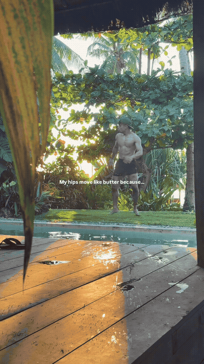
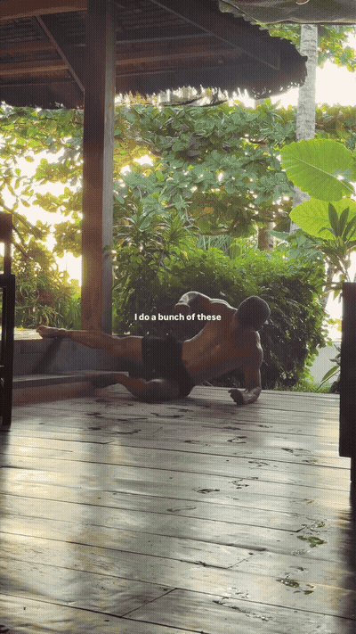
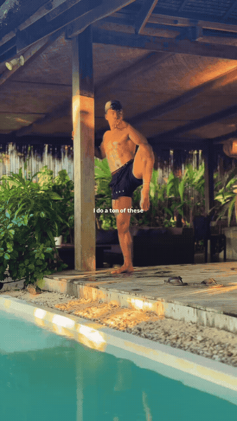
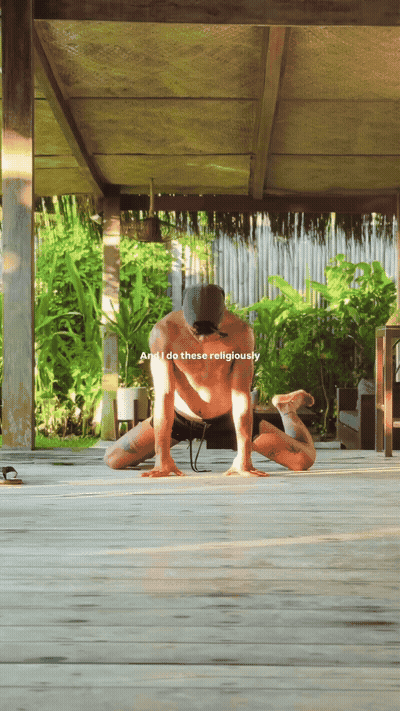

Stand tall and raise/extend one leg in a controlled side-kick pattern. Keep the range active and return without swinging or collapsing into the stance hip.

Use a side-facing or angled forearm-plank position and extend or lift the top leg while keeping the trunk organized.

Hold a stable post or wall for balance, chamber one knee high, and control the hip as the leg moves through its available range.

Move into a wide-knee frog or straddle-based hip-opening position with the hands supporting the torso. Stay in a calm, pain-free range.